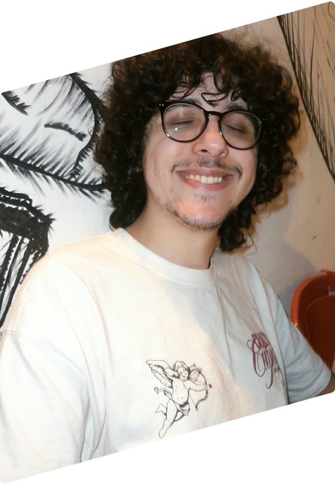

Desenvolvedor
Front End &
UX/UI Designer
Localizado em São Paulo 🚈

Localizado em São Paulo 🚈
Desenvolvo pequenos projetos em HTML, CSS e JavaScript. Assim como também trabalho com UX e UI Design. Estou em busca de oportunidades na área.
Atuo no recebimento, conferência, armazenagem e controle de estoque de minimercados. Realizo separação, reposição e apoio à expedição.
Controle de documentos e planilhas, atendimento e suporte à operação terceirizada de portaria, limpeza e zeladoria, com relatórios.
Prestei apoio administrativo com organização de arquivos, atualização de planilhas, atendimento telefônico.
Minha mais recente experiência acadêmica foi o técnologo 🎓 que fiz na Fatec de Mauá em Desenvolvimento de Sistemas Multiplataforma. Além disso me mantenho sempre atualizado com cursos intensivos online.